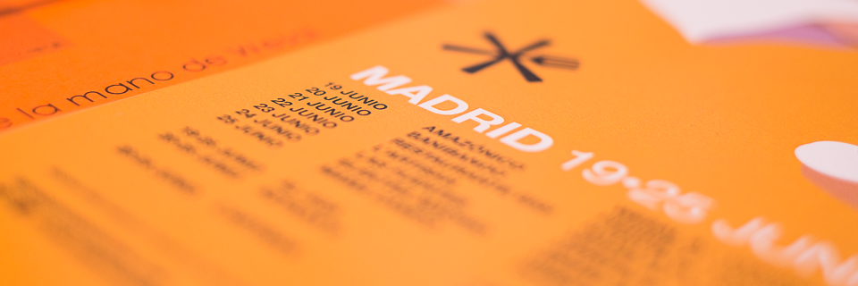

About
Project Chefugee collaborates with refugee chefs and home cooks to offer unique culinary experiences in Madrid.
As one of the main volunteer-driven projects of Madrid for Refugees (MFR), Chefugee hosts pop-up dinners, cooking classes, and gastronomic events featuring the traditional cuisine of refugees and asylum seekers who reside in Madrid. Guests are able to dine and connect with refugees as well as people from all over the world in a warm and friendly atmosphere.
For enquiries food@chefugee.org
ConLosRefugiados

Chefugee® es un apasionado proyecto llevado a cabo por voluntarios de la asociación Madrid for Refugees (MFR), cuyo objetivo es proporcionar a refugiados cocineros la oportunidad de ganar salarios dignos gracias a su talento en la cocina. Chefugee organiza eventos gastronómicos al estilo “pop-up”, como cenas, almuerzos y clases de cocina en colaboración con refugiados y solicitantes de asilo de todo el mundo. En un entorno cálido, agradable y multicultural, los comensales tienen también la oportunidad de interactuar y conocer a los refugiados y solicitantes de asilo al mismo tiempo que saborean los exóticos platos de sus países de origen.
Desde que acogió su primera cena en abril de 2016, Chefugee se ha expandido rápidamente y ya ha albergado 11 eventos -con todos los tickets agotados- en los que ha presentado platos preparados por refugiados y solicitantes de asilo de Siria, Ucrania, Camerún, Marruecos, Irak, Palestina y Venezuela. Los miembros del equipo de Chefugee también fueron los coordinadores del proyecto del festival de carácter europeo Refugee Food Festival (junio, 2017) en colaboración con ACNUR y la ONG Food Sweet Food de Paris.
MFR Chefugee apoya decididamente la coalición #ConLosRefugiados y está decidida a acoger e integrar a los refugiados en la comunidad de Madrid con el objetivo de expandir la filosofía de “Comida-Comunidad” así como el movimiento a otros lugares.
MFR Chefugee apoya decididamente la coalición #ConLosRefugiados y está decidida a acoger e integrar a los refugiados en la comunidad de Madrid con el objetivo de expandir la filosofía de “Comida-Comunidad” así como el movimiento a otros lugares.